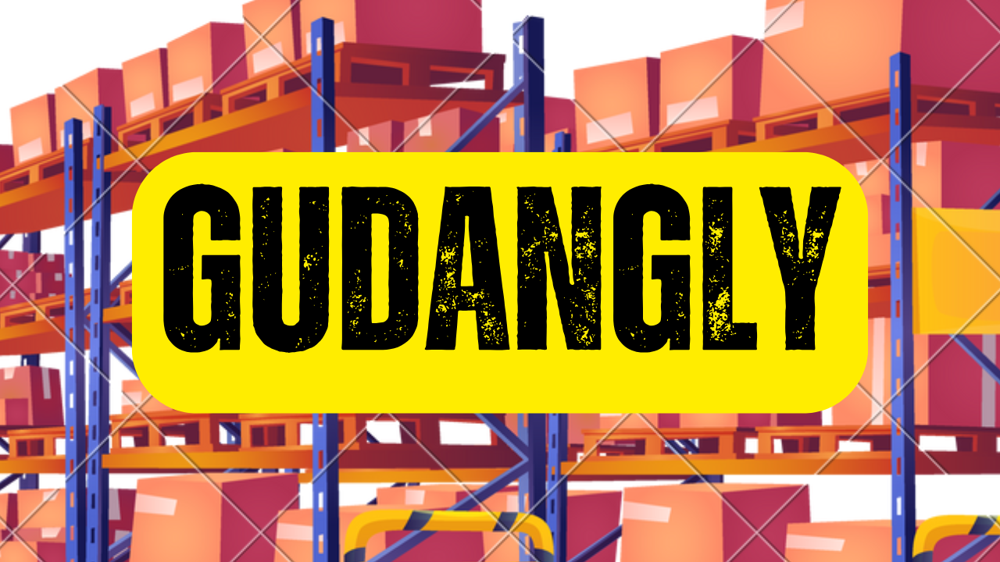
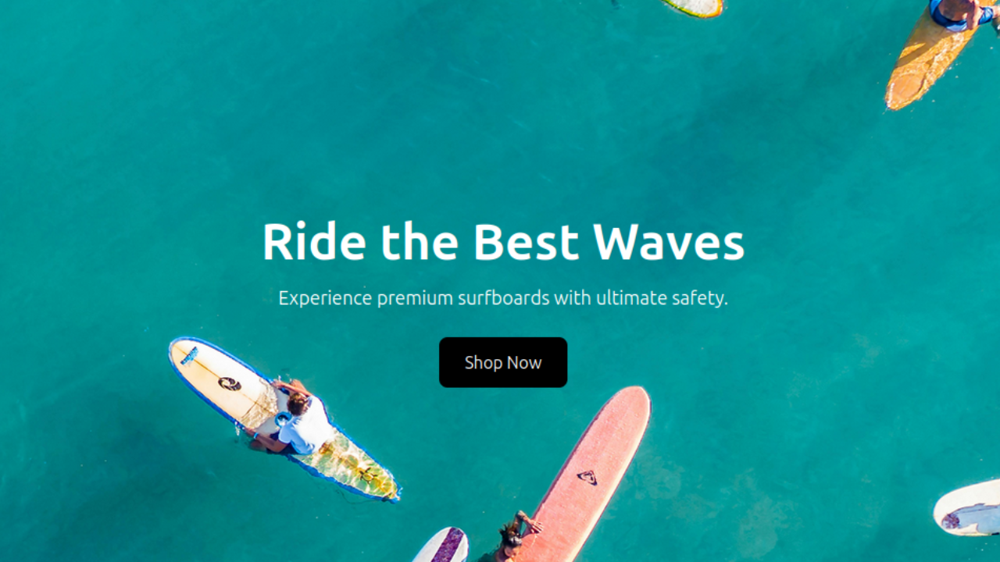

Hi, I'm Arno
Seorang Programer yang berfokus pada pengembangan website.
Lihat Proyek
Proyek Terbaru

Tampilan GudangLy
GudangLy
Aplikasi Manajemen Inventaris adalah aplikasi berbasis web untuk mengelola stok barang, menambah, mengedit, dan menghapus barang dari inventaris.
Ini adalah proyek sederhana yang saya buat untuk mengajar Siswa RPL SMK 3 Metro saat sedang melakukan Prakerin di Kampus.
Teknologi yang digunakan: Flask, HTML, dan Bootstrap.
Lihat Proyek
 Tampilan Website Portofolio Sederhana
Tampilan Website Portofolio Sederhana
Portofolio Sederhana
Proyek sederhana untuk mengembangkan portofolio sederhana pribadi.
Proyek ini saya buat sewaktu masih menempuh pendidikan di Universitas.
Teknologi yang digunakan: Flask, HTML, dan Bootstrap
Lihat Proyek

Tampilan Website One Euphoria
Website One Euphoria
Website Penjualan Surfboards sederhana dan responsive.
Website ini memiliki fitur-fitur sederhana dengan pendekatan product showcase, surfing blog, customer testimonials, dan responsive design.
Teknologi yang digunakan: VueJS dan TailwindCSS.
Lihat Proyek